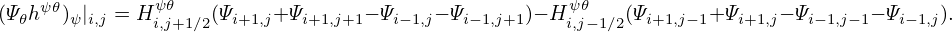
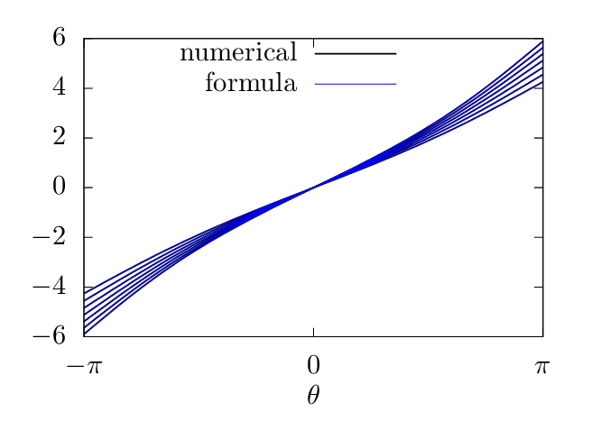

For the above magnetic ï¬eld, the toroidal shift involved in the deï¬nition of the generalized toroidal angle can be expressed in simple analytical form. The toroidal shift is given by
|
| (364) |
where the local safety factor  can be written as
can be written as
 | (365) |
Using 𒥠= −Rr and
|
| (366) |
The local safety factor  in Eq. (365) is written as
 | (367) |
Using this, expression (364) is written
 | (368) |
Assume 𜃠∈ (−π,π), then the integration ∫ 0𝜃1∕Rd𜃠can be analytically performed (using maxima), yielding
 | (369) |
Then expression (368) is written
 | (370) |
where use has been made of sin𝜃∕(cos𜃠+ 1) = tan(𝜃∕2). Using this, the generalized toroidal angle can be written as
The results given by the formula (370) are compared with the results from my code that assumes a general numerical conï¬guration. The results from the two methods agree with each other, as is shown in Fig. 27, which provides conï¬dence in both the analytical formula and the numerical code. 
 d𜃠computed by using formula (370) and the numerical code
agree with each other. The different lines correspond to values of δ on different magnetic surfaces.
In the numerical code, two kinds of poloidal angles can be selected: one is the equal-volume
poloidal angle, and another is the equal-arch-length angle. Make sure that the latter is selected
when doing the comparison because the the poloidal angle 𜃠appearing in the analytical formula
is the equal-arc-length poloidal angle.
d𜃠computed by using formula (370) and the numerical code
agree with each other. The different lines correspond to values of δ on different magnetic surfaces.
In the numerical code, two kinds of poloidal angles can be selected: one is the equal-volume
poloidal angle, and another is the equal-arch-length angle. Make sure that the latter is selected
when doing the comparison because the the poloidal angle 𜃠appearing in the analytical formula
is the equal-arc-length poloidal angle.In passing, we note that the straight-ï¬eld-line poloidal angle 𝜃f can also be considered to be deï¬ned by
 | (372) |
i.,e,
 | (373) |
Then using Eq. (371), 𝜃f is written as
 | (374) |
which agrees with Eq. (A2) in Gorler’s paper[13].